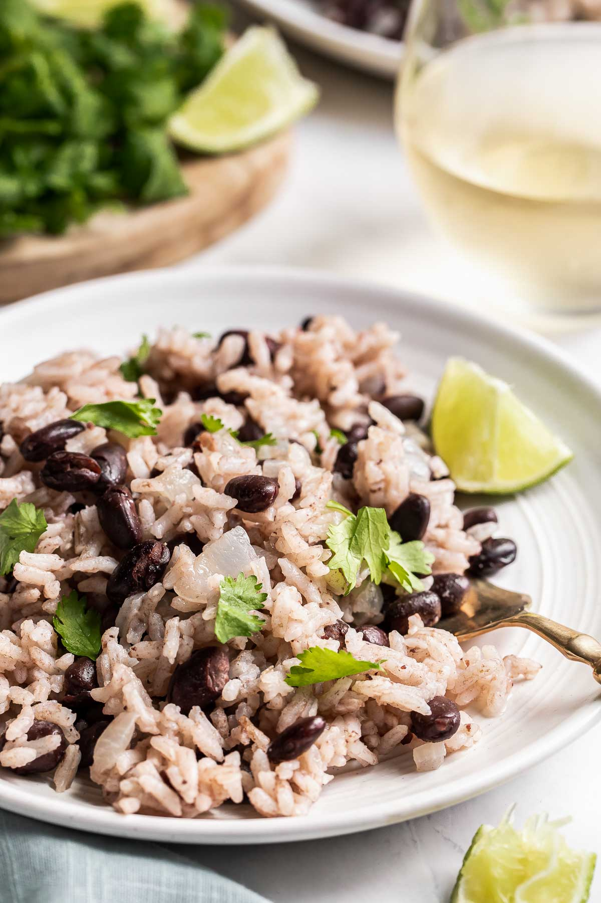

Black Beans And Rice

Description
Black beans and rice make a great 30-minute vegetarian meal that's filling, delicious, and cheap! Great as a side dish or in a burrito bowl, too.
Ingredients
- 1 teaspoon olive oil
- onion, chopped
- 2 cloves garlic, minced
- ¾ cup uncooked white rice
- 1 ½ cups low sodium, low fat vegetable broth
- 3 ½ cups canned black beans, drained
- 1 teaspoon ground cumin
- ¼ teaspoon cayenne pepper